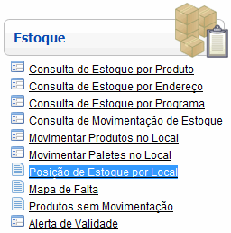
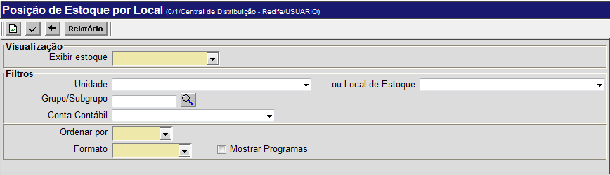
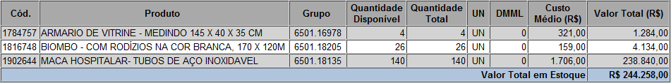

Posição de Estoque por Local [ Voltar ]Com este formulário é possível ter uma visão geral de todos os produtos que constam no estoque de um determinado local. Além dos produtos e quantidades, no relatório constam os respectivos endereços, prazos de validade, custo médio, entre outras informações. O formulário "Relatório de posição do estoque" encontra-se dentro do menu "Estoque". 
O sistema exibirá a seguinte tela: 
Para gerar o relatório de posição do estoque, siga os passos abaixo: 1º Passo: selecione o local/unidade, o grupo/subgrupo, a conta contábil, a forma de ordenamento e o formato da listagem. Para exibir dados contábeis na listagem, selecione o formato 1. Para dados físicos do estoque, selecione o formato 2. Se desejar que os produtos sejam classificados por conta contábil, selecione o formato 3. Marque a opção "Mostrar Programas" se quiser que na tabela sejam considerados os programas dos produtos. Observação: no campo "Exibir estoque", se for selecionada a opção "Por Unidade", a tabela de resultados terá obrigatoriamente o formato contábil. 2º
Passo: clique no botão 
Observação: para atualizar a tela com as informações em tempo real, clique no botão [Atualizar]. 3º Passo: se desejar, clique no
botão para
visualizar a tela de impressão do relatório. Em seguida,
utilize a tecla |
 [Imprimir]
do navegador para imprimir o relatório.
[Imprimir]
do navegador para imprimir o relatório.